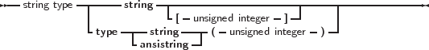

Free Pascal supports the String type as it is defined in Turbo Pascal: a sequence of single-byte characters with an optional size specification. It also supports ansistrings (with unlimited length) and codepage information1 as in Delphi.
To declare a variable as a string, use the following type specification:
_________________________________________________________________________________________________________
String Type

___________________________________________________________________
If there is a size specifier (using square brackets), then its maximum value - indicating the maximum size of the string - is 255. If there is a codepage specifier, (using round brackets) it indicates an ansistring with associated code page information.
The meaning of a string declaration statement without size and code page indication is interpreted differently depending on the {$H} switch:
If no size and code page indication indication is present, the above declaration can declare an ansistring or a short string.
Whatever the actual type, single byte strings can be used interchangeably. The compiler always takes care of the necessary type conversions. Note, however, that the result of an expression that contains ansistrings and short strings will always be an ansistring.
A string declaration declares a short string in the following cases:
Short strings are always assumed to use the system code page. The predefined type ShortString is defined as a string of size 255:
If the size of the string is not specified, 255 is taken as a default. The actual length of the string can be obtained with the Length standard runtime routine. For example in
NameString can contain a maximum of 10 characters. While StreetString can contain up to 255 characters.
Remark: Short strings have a maximum length of 255 characters: when specifying a maximum length, the maximum length may not exceed 255. If a length larger than 255 is attempted, then the compiler will give an error message:
For short strings, the length is stored in the character at index 0. Old Turbo Pascal code relies on this, and it is implemented similarly in Free Pascal.
Despite this, to write portable code, it is best to set the length of a shortstring with the SetLength call, and to retrieve it with the Length call. These functions will always work, whatever the internal representation of the shortstrings or other strings in use: this allows easy switching between the various string types.
Ansistrings are strings that have no length limit, and have a code page associated with them2. They are reference counted and are guaranteed to be null terminated.
Internally, an ansistring is treated as a pointer: the actual content of the string is stored on the heap, as much memory as needed to store the string content is allocated.
If no codepage is given in the declaration, the system codepage is assumed. What codepage this is, is determined by the DefaultSystemCodePage constant in the system unit.
This is all handled transparently, i.e. they can be manipulated as a normal short string. Ansistrings can be defined using the predefined AnsiString type or using the string keyword in mode {$H+}.
Remark: The null-termination does not mean that null characters (char(0) or #0) cannot be used: the null-termination is not used internally, but is there for convenience when dealing with external routines that expect a null-terminated string (as most C routines do).
If the {$H} switch is on, then a string definition using the regular String keyword that doesn’t contain a length specifier, will be regarded as an ansistring as well. If a length specifier is present, a short string will be used, regardless of the {$H} setting.
If the string is empty (’’), then the internal pointer representation of the string pointer is Nil. If the string is not empty, then the pointer points to a structure in heap memory.
The internal representation as a pointer, and the automatic null-termination make it possible to typecast an ansistring to a pchar. If the string is empty (so the pointer is Nil) then the compiler makes sure that the typecasted pchar will point to a null byte.
Assigning one ansistring to another doesn’t involve moving the actual string. A statement
results in the reference count of S2 being decreased with 1, The reference count of S1 is increased by 1, and finally S1 (as a pointer) is copied to S2. This is a significant speed-up in the code.
If the reference count of a string reaches zero, then the memory occupied by the string is deallocated automatically, and the pointer is set to Nil, so no memory leaks arise.
When an ansistring is declared, the Free Pascal compiler initially allocates just memory for a pointer, not more. This pointer is guaranteed to be Nil, meaning that the string is initially empty. This is true for local and global ansistrings or ansistrings that are part of a structure (arrays, records or objects).
Remark: Note that a function result in this regard is considered equivalent to a var parameter and hence will not be initialized to Nil. As a consequence it may point to a legitimate non-Nil ansistring when the function begins.
This does introduce an overhead. For instance, declaring
Will copy the value Nil 100,000 times into A. When A goes out of scope, then the reference count of the 100,000 strings will be decreased by 1 for each of these strings. All this happens invisible to the programmer, but when considering performance issues, this is important.
Memory for the string content will be allocated only when the string is assigned a value. If the string goes out of scope, then its reference count is automatically decreased by 1. If the reference count reaches zero, the memory reserved for the string is released.
If a value is assigned to a character of a string that has a reference count greater than 1, such as in the following statements:
then a copy of the string is created before the assignment. This is known as copy-on-write semantics. It is possible to force a string to have reference count equal to 1 with the UniqueString call:
It’s recommended to do this e.g. when typecasting an ansistring to a PChar var and passing it to a C routine that modifies the string.
The Length function must be used to get the length of an ansistring: the length is not stored at character 0 of the ansistring. The construct
which was valid for Turbo Pascal shortstrings, is no longer correct for Ansistrings. The compiler will warn if such a construct is encountered.
To set the length of an ansistring, the SetLength function must be used. Constant ansistrings have a reference count of -1 and are treated specially, The same remark as for Length must be given: The construct
which was valid for Turbo Pascal shortstrings, is no longer correct for Ansistrings. The compiler will warn if such a construct is encountered.
Ansistrings are converted to short strings by the compiler if needed, this means that the use of ansistrings and short strings can be mixed without problems.
Ansistrings can be typecasted to PChar or Pointer types:
There is a difference between the two typecasts. When an empty ansistring is typecasted to a pointer, the pointer will be Nil. If an empty ansistring is typecasted to a PChar, then the result will be a pointer to a zero byte (an empty string).
The result of such a typecast must be used with care. In general, it is best to consider the result of such a typecast as read-only, i.e. only suitable for passing to a procedure that needs a constant pchar argument.
It is therefore not advisable to typecast one of the following:
Since strings have code page information associated with them, it is important to know which code page a string uses:
This code page is called the declared code page.
The compiler will convert the code page of strings as needed: When assigning a string, the actual codepage of the source string will be converted to the declared code page of the target string if the declared source and target code pages are different.
If a string with a declared page SOURCE_CP assigned to a string with declared code page DEST_CP, in a file with code page CODE_CP then the following describes the mechanism:
These rules mean that it is perfectly possible for an AnsiString variable to get a code page that differs from its declared code page. E.g. in the third case SOURCE_CP could be CP_ACP, while after the assignment it may have a dynamic code page equal to DefaultSystemCodePage.
Note: as mentioned above, whether or not a potential code page conversion happens only depends on the declared code pages of the involved strings. This means that if you assign one AnsiString(X) to another AnsiString(X) and the former’s dynamic code was different from X, the string data will not be converted to code page X by the assignment.
All this means that in the following code:
The compiler will convert the contents in string B to the codepage of string A. Note that if a code page conversion takes place, the reference count mechanism is not used: a new string will be allocated.
This automated conversion of code pages can slow down the code seriously, so care must be taken to see to it that the code page conversions are limited to a minimum.
The code page of a string can be set explicitly using the SetCodePage routine of the system unit. Calling this routine will convert the value of a string to the requested code page.
Remark: Code page conversions can result in loss of data: if a certain character cannot be represented in the target code page, the output for that character is undefined.
Remark: When a string whose static code page equals the source file code page, to anything with code page CP_ACP (i.e., a plain ansistring, shortstring, or pchar), no conversion will be performed either. No code page conversion is done when s can result in loss of data: if a certain character cannot be represented in the target code page, the output for that character is undefined.
Remark: Code page support requires quite some helper routines, these are implemented in the unicodestring manager. On windows, the system routines are used for this. On Unices, the cwstring unit can be used to link to the C library and use the C library conversion support. Alternatively, the fpwidestring unit contains a unicodestring manager implemented natively in Object Pascal.
The pre-defined RawByteString type is an ansistring string type without codepage information (CP_NONE):
It is treated specially in the sense that if the conversion routines encounter CP_NONE in a source or target string, no code page conversion is performed, the code page of the source string is preserved.
For this reason, most single-byte string routines in the system and sysutils units use the RawByteString type.
Single-byte code page strings can only store the characters available in that code page. Characters that are not present in the code page, cannot be represented by that string. The UTF-8 unicode encoding is an encoding that can be used with single-byte strings: The ASCII characters (ordinal value ¡128) in this encoding map exactly to the CP_ACP encoding. This fact is used to define a single byte string type that can contain all characters:
The UTF8string string type can be used to represent all Unicode characters. This power comes as a price, though. Since a unicode character may require several bytes to be represented in the UTF-8 encoding, there are 2 points to take care of when using UTF8String:
For all other code pages, the number of characters in a single-byte code page string is equal to the byte length of the string.